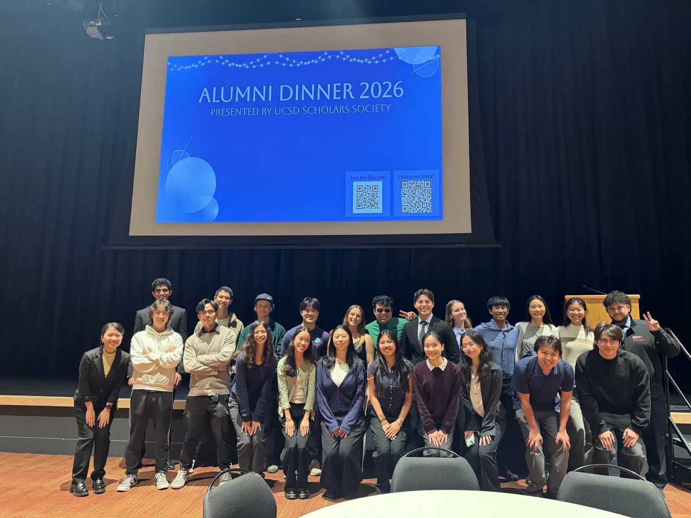
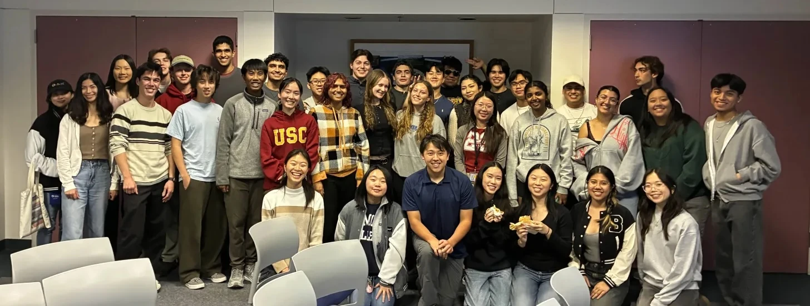
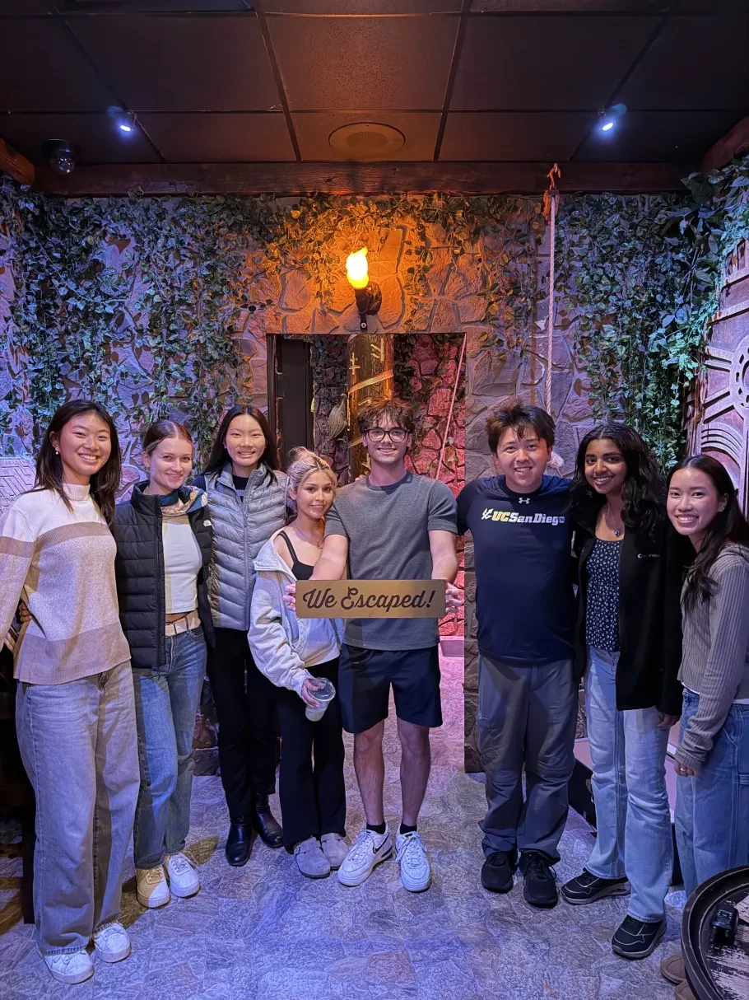
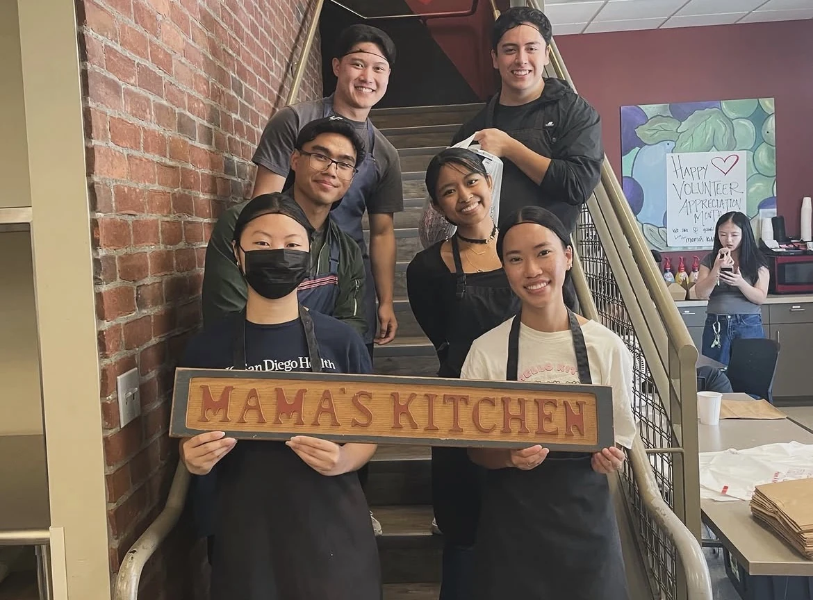
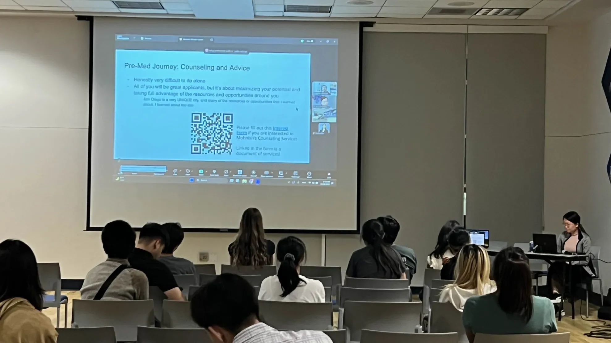
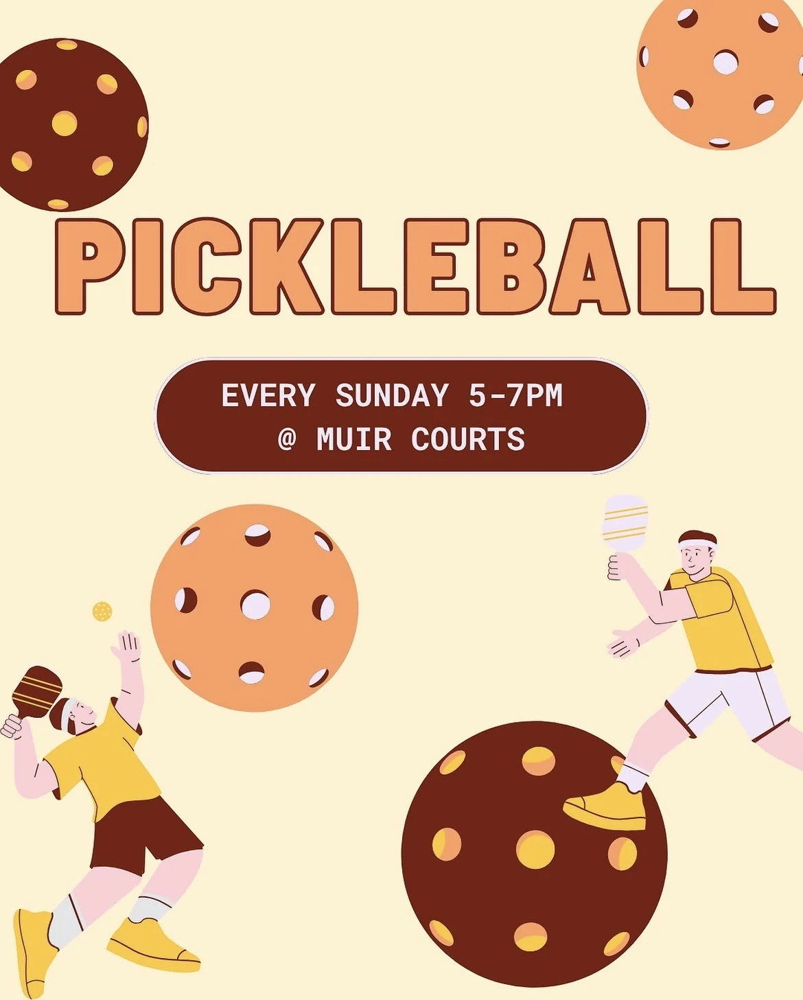

Academic
Faculty mixers, research panels, study sessions, and resources that help scholars thrive inside the classroom and beyond.
Programs

Faculty mixers, research panels, study sessions, and resources that help scholars thrive inside the classroom and beyond.

Game nights, beach socials, banquets, and low-pressure spaces to make friends and feel at home at UCSD.

Cross-year pairings that help scholars share advice, stories, support, and the small things that make campus life easier.

Community service events, campus initiatives, and outreach opportunities for scholars who want to give back.

Conversations with professionals across tech, healthcare, business, research, and other fields.

Friendly games at the Muir courts on Sundays from 5-7 PM. All skill levels are welcome.